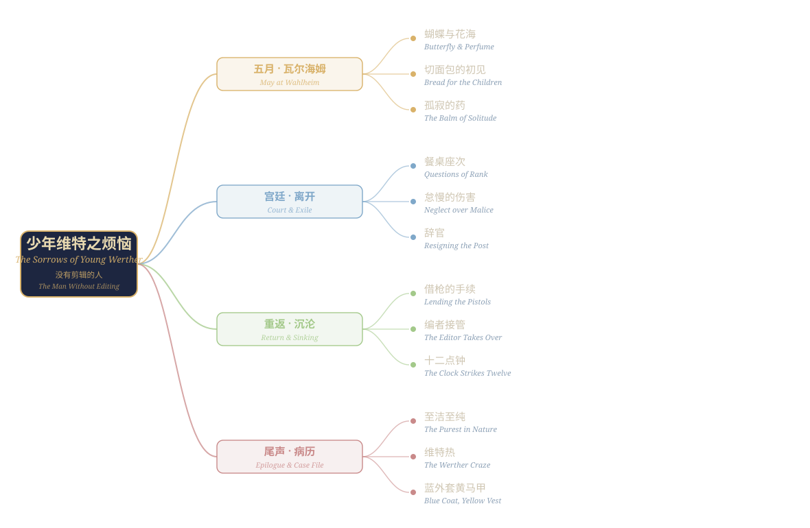

少年维特之烦恼
〇 · 书籍信息
基本信息
| 书名 | 《少年维特之烦恼》（The Sorrows of Young Werther）——书名就写完了全书内容：少年、维特、烦恼，三个名词三个病灶——歌德不给答案，只给病历 |
|---|---|
| 作者 | 歌德（1749–1832）：25 岁在韦茨拉尔帝国法院实习，爱上好友凯斯特纳的未婚妻夏洛特·布甫，用四个星期写完本书——维特=歌德+凯斯特纳的合体：他把自己的命分给了两个人 |
| 结构 | 上下两部书信集 + 编者按语 + 尾声诗：日期即章节，维特的书信按时间排列；编者的声音从中途接管叙事，宣布死亡——小说的终点不是作者写完的，是「编辑部」宣布的 |
| 体裁 | 书信体小说：第一人称现场、无回溯、无修辞的安全距离——每封信写在情绪发生当时：情感小说里最「直播」的文体 |
| 一句话 | 他借了别人的手枪，穿了自己第一次见她时的衣服，摊开《艾米莉娅·迦洛蒂》，等钟敲十二下——「夏洛特，夏洛特！永别了，永别了！」——欧洲第一个为爱情直播死亡的人。 |
一 · 核心主题总览
一沓按日期排列的信纸里埋着四组母题：① 书信体的时间性（全书引擎）
书信体不允许回忆：每封信写在情绪发生当时——喜悦与绝望之间没有剪辑。歌德用「日期」当剪辑机：5 月 4 日的蝴蝶，12 月的钟声，中间每一次落款都是一次沉船记录。
② 自然人与官僚社会
维特信奉「自然」：孩子、农夫、未修剪的榉树；社会信奉「秩序」：官阶、餐桌座次、宫廷交际。贵族聚会上他因出身被请离圈子——被侮辱的不是他这个人，是他「不分类」的存在方式。
③ 三个人的几何
维特—绿蒂—阿尔贝特构成三角：绿蒂在中间，两边都爱她，两边都不是坏人。歌德的诚实在于：悲剧没有反派——阿尔贝特甚至把枪借给了维特；杀死维特的不是任何人的恶意，是几何本身。
④ 维特热与文化工业
小说出版即席卷欧洲：蓝外套黄马甲成为青年制服，莱比锡当局明令禁穿；学界后来以「维特效应」（Werther effect）命名模仿性自杀——这是文学史上第一次「作品比作者走得更远」的事件：歌德 25 岁就体验了流量的恐怖。
二 · 第一段 五月 · 瓦尔海姆—— 蝴蝶 · 花海 · 切面包 ——
人间天堂与蝴蝶
5 月 4 日第一封信以一句「我终于走了」开场：逃离旧纠葛，到瓦尔海姆乡间画画。「孤寂是医治我心灵的一剂良药」——但孤寂对维特是药，也是燃料；「我多想化身为一只蝴蝶，遨游在这芬芳馥郁的花海中」——蝴蝶是全书的第一个自我隐喻：自由、短命、被香气牵引。
◆ 语言学习 · 开篇 · 书信
| genial /ˈdʒiːniəl/ | adj. 宜人的，亲切的 —— 例句：a genial balm to my mind（第一封信）。十八世纪高频褒义词；geniality n. |
|---|---|
| balm /bɑːm/ | n. 香脂，安抚物 —— 例句：solitude is a balm。药膏词族的比喻用法：自然是药 |
| bounteous /ˈbaʊntiəs/ | adj. 丰饶的 —— 例句：its bounteous promises（春光）。文学化的 big；bounty n. 恩赐 |
| perfume /ˈpɜːfjuːm/ | n. 芬芳 —— 例句：an ocean of perfume（花海）。嗅觉词做空间名词：香气成了海，人成了蝴蝶 |
句型 ｜ 「…one might wish himself transformed into a butterfly, to float about in this ocean of perfume, and find his whole existence in it.」——might wish + 转化隐喻 + 存在收束：歌德写自然的句法是「变身句」——人只有在动词里才能自由：wish himself transformed 是全书最温柔的动词。
绿蒂与面包
初见绿蒂的场面歌德选得极小：她在院子里给弟妹们切面包，按长幼次序分发。爱情的引爆点不是美貌，是秩序中的温柔——维特爱上的第一个画面是「有人被需要」。此后一切场景都在重复这个构图：她弹琴、她照顾病人、她主持家务——绿蒂是自然秩序的人形版本，这正是官僚社会永远给不了维特的东西。
◆ 语言学习 · 初见 · 家常
| loaf /ləʊf/ | n. 一条面包 —— 切面包分发的初见场面：loaves 复数；歌德把史诗的场面预算花在了一条面包上 |
|---|---|
| portion /ˈpɔːʃn/ | n. 一份，份额 —— 例句：give each child his portion。份儿饭=爱的分配制度 |
| household /ˈhaʊshəʊld/ | n. 家庭，家务 —— 绿蒂的身份动词场：household management；housekeeper |
| domestic /dəˈmestɪk/ | adj. 家常的，居家的 —— domestic scene（初见的定性）：domesticity n.——十八世纪的新浪漫：床笫之前先有厨房 |
习语 ｜ bread-winning 挣面包的——养家词族；in her element 在她的本行里——绿蒂主持家务的样子：歌德发现：一个人「在本行里」的样子，是最强的性感。
三 · 第二段 宫廷 · 离开—— 餐桌 · 座次 · 阿尔贝特 ——
使馆与贵族餐桌
维特进入公使馆任职，却在贵族聚会上因出身被「礼貌地」请离圈子——他唯一的过错是不属于任何分类。「误解与怠慢造成的伤害，比奸诈与恶意更大」——歌德借信件说出了组织行为学的早期版本：冷暴力没有加害者，只有缺席。他辞职离开：宫廷给了他官僚身份的顶配，却给不了他一把椅子。
◆ 语言学习 · 宫廷 · 冷遇
| embassy /ˈembəsi/ | n. 使馆 —— 例句：at the embassy（任职）。legation 公使馆（历史用语）；diplomat 词族 |
|---|---|
| slight /slaɪt/ | n./v. 怠慢 —— 例句：the slight at the table（餐桌事件）。小羞辱的专词：slight 的杀伤力在于它的「小」 |
| rank /ræŋk/ | n. 等级 —— 例句：questions of rank（座次的学问）。全书的社会学关键词：rank vs nature |
| humiliate /hjuːˈmɪlieɪt/ | v. 羞辱 —— humiliated 分词做心理定语；humiliation n.——拉丁词根 humilis（卑微的）：羞辱=把你打回土地 |
句型 ｜ 「…misunderstandings and neglect occasion more mischief in the world than even malice and wickedness.」——A occasion more mischief than B：比较级的判词句。歌德的论断句偏爱「比坏更坏的是冷漠」结构：malice 至少在场，neglect 连在场都不肯。
阿尔贝特与手枪
绿蒂与阿尔贝特成婚；三个人维持着体面的友谊——直到那场关于自杀的辩论：维特问阿尔贝特「一个人能否被允许结束自己」，阿尔贝特说不许，维特笑而不语，随后「请在必要时把枪借给我」。这一幕是全书最冷的伏笔：借枪的对话发生在夏夜，还枪的动作发生在冬天——歌德让凶器在全书一开始就办完了过户手续。
◆ 语言学习 · 辩论 · 伏笔
| pistols /ˈpɪstlz/ | n. 手枪 —— 阿尔贝特的收藏：全书最重要的「道具出借」 |
|---|---|
| resolve /rɪˈzɒlv/ | n. 决心 —— 例句：the firmness of his resolve。哲学词：resolve 也是「分解」——决心的词源就是拆解自己 |
| consent /kənˈsent/ | n./v. 同意 —— 例句：with Albert's consent（借枪的合法手续）。悲剧的完成需要官僚程序的盖章：这是歌德最黑色的一笔 |
| resign /rɪˈzaɪn/ | v. 辞职；听任 —— resign one's post（辞官）与 resign oneself to fate（认命）一词两义：维特把两件事一起办了 |
习语 ｜ lend me the pistols 把枪借给我——文学史上最著名的道具请求；keep up appearances 维持体面——三人友谊的运营准则：体面是全书真正的凶器，手枪只是执行工具。
四 · 第三段 重返 · 沉沦—— 编者 · 秋冬 · 按语 ——
编者按语的换挡
重返瓦尔海姆后，维特的信越来越短、越来越乱。然后歌德做了一件文体史上的大事：作者以「编者」（editor）身份插入——「维特的书信到这里为止，我们所掌握的只有零星残页」。叙事权从第一人称移交给第三人称：从此维特的话不再直接可达，读者只能隔着编辑部的玻璃看一个人下沉。这是文学史上第一次「作者接管叙述者」：书信体的天花板被换成了验尸报告的天花板。
◆ 语言学习 · 换挡 · 残页
| editor /ˈedɪtə/ | n. 编者 —— 全书的第二声部：editorial intervention（编辑部干预）；作者降格为编辑，恰恰获得了全知 |
|---|---|
| fragment /ˈfræɡmənt/ | n. 残片 —— 例句：scattered fragments（零星残页）。书信体的物理真相：信会散佚 |
| succumb /səˈkʌm/ | v. 屈服，沉沦 —— 例句：he succumbed to despair（编者的措辞）。succumb to 短语族：压力、疾病、诱惑通吃 |
| grief /ɡriːf/ | n. 悲恸 —— 编者词库的核心词：grief-stricken；与 sorrow 辨析：grief 更近内脏 |
句型 ｜ 「…his letters were interrupted; what we know of his last days comes from scattered fragments.」——被动 + 来源状语：编者的句法是档案句法——当一个人不再能为自己说话，句子会自动切换语态：这是文体学能教你的最深一课。
十二月与十二下
最后的夜晚：绿蒂读诗落泪，两人拥抱又分开——那扇门从此关死。维特回家写下绝笔：粉红蝴蝶结随葬、孩子们代吻、灵魂飘荡在坟墓之上。「子弹已经上膛——钟表敲了十二下。我说阿门。」——连自杀都严格遵守时钟：他把死亡办成了最后一次准时落款。次日六点仆人发现他：一身血迹，枪在旁边，书桌上摊开《艾米莉娅·迦洛蒂》。
◆ 语言学习 · 绝笔 · 终局
| loaded /ˈləʊdɪd/ | adj. 已上膛的 —— 例句：they are loaded（绝笔）。loaded 一词三义：上膛/满载/充满暗示——这颗子弹在语义里也有弹道 |
|---|---|
| farewell /ˌfeəˈwel/ | int. 永别 —— 例句：Charlotte, Charlotte! farewell, farewell!；fare thee well 的缩合——告别词的本义是「祝你走好」：绝望者的最后祝福 |
| in full dress | phr. 穿全套礼服 —— 例句：he was in full-dress costume（发现现场）。死亡的正装出席：仪式感是绝望最后的礼貌 |
| welter /ˈweltə/ | v. 翻滚，血污狼藉 —— 例句：weltering in his blood（发现场景）。古雅动词；welterweight 拳击称谓同源 |
习语 ｜ the clock strikes twelve 钟敲十二下——午夜=临界点：歌德选的时刻既是夜的顶点，也是他落款习惯的时刻；a cold shudder seized her 一阵寒颤攫住她——身势短语做心理描写：门铃声场景，是全书最克制的一次崩溃。
五 · 第四段 尾声 · 诗 · 病历—— 郭译 · 尾声诗 · 维特热 ——
尾声诗与至洁至纯
书前有一首小诗，郭沫若译本的开篇即是它：「青年男子谁个不善钟情？妙龄女人谁个不善怀春？这是人性中的至洁至纯，为什么从此中有惨痛飞迸？」——歌德把全书压缩成四个问句：两问问人类，一问问天性，最后一问不答。尾声诗的功能是病历的封面页：它宣布这不是一个人的病，是人的病。
◆ 语言学习 · 尾声 · 问句
| woo /wuː/ | v. 求爱，追求 —— 尾声诗古语词：wooing（钟情）；古语词自带歌谣感：诗的司法管辖权高于散文 |
|---|---|
| purest /ˈpjʊərɪst/ | adj. 最纯洁的 —— the purest in human nature（至洁至纯）：最高级做名词短语——诗的压缩法 |
| anguish /ˈæŋɡwɪʃ/ | n. 惨痛 —— 例句：why this anguish（末问）。拉丁 angustiae（狭道）：痛苦=被挤进窄路 |
| epilogue /ˈepɪlɒɡ/ | n. 尾声 —— epilogue poem；epi-（在后面）+ logos（话）：「后面的话」是文学的遗嘱区 |
句型 ｜ 「Who is the youth that does not love? Who the maid that does not woo?」——双重反问 + 平行结构：歌德的问句不索取答案，索取认同。反问句是文学的集体签名：它把「我」的问题签成「我们」的。
维特热与病历的公共化
1774 年出版即成风暴：青年穿「维特装」（蓝外套黄马甲），莱比锡当局明令禁穿；教会指责小说教唆自杀，歌德在再版里加了一首反讽小诗劝读者「做个堂堂男子」。两百多年后，社会学以「维特效应」命名模仿性自杀的传播机制——一本 176 页的小说成了公共卫生术语的出处。歌德的个人史与作品的公共史在这里分岔：他把自己的病写成了病历，读者却把病历当成了处方。
◆ 语言学习 · 热潮 · 术语
| craze /kreɪz/ | n. 狂热 —— the Werther craze（维特热）；crazy adj.；craze 原义「裂缝」：狂热是一种社会裂纹 |
|---|---|
| emulate /ˈemjuleɪt/ | v. 模仿 —— emulative behavior（模仿行为）；emulation n.——模仿词族里最体面的一款 |
| banned /bænd/ | adj. 被禁的 —— 例句：banned in Leipzig（禁穿令）。ban 的过去分词：书与衣服共用一个动词 |
| morbid /ˈmɔːbɪd/ | adj. 病态的 —— 例句：morbid sympathy（病态的共情）。morbid anatomy 病理解剖：批评维特热的人用的词，本身就是医学词 |
习语 ｜ copycat effect 模仿效应——维特效应的现代同义词；art imitating life, life imitating art 艺术模仿生活、生活模仿艺术——维特热的公式：这句话本来是玩笑，1774 年之后成了学术课题。
六 · 人物图鉴与成长弧线—— 主角配角 · 一张表看穿 ——
主要人物
维特 Werther——主人公：画家气质的青年官僚。弧线：五月的天堂 → 餐桌的流放 → 重返的沉没 → 十二点的绝笔。他死于一种准确的病：把全部存在抵押给了「唯一的画面」（切面包的绿蒂）——歌德替他保留了全部尊严：他到死都穿着初见时的衣服。
绿蒂 Lotte (Charlotte)——法院书记官的女儿，长姊当家。弧线：切面包 → 弹琴读诗 → 门铃之夜 → 晕倒在她丈夫脚边。她从头到尾没有做错任何事——这正是歌德最狠的设计：无辜者的一个拥抱足以致人死命。
阿尔贝特 Albert——未婚夫→丈夫：理智、正派、可靠。弧线：辩论对手 → 借枪人 → 抱起晕倒妻子的人。他是全书唯一「正确」的人：歌德告诉你，悲剧可以由三个正派的人共同完成。
次要人物（功能位）
| 莱奥诺蕾 Leonore | 维特留下的旧相识：可怜的莱奥诺蕾——第一封信里的亏欠清单：维特的情感负债在遇到绿蒂之前已经滚动计息 |
|---|---|
| 威廉 Wilhelm | 收信人：维特的大部分信写给他——书信体的第一受话人：他负责接收，不负责营救 |
| 编者（编辑）The Editor | 叙述权的接管者：残页整理者、验尸报告的执笔人——歌德自己的面具：只有戴上这副面具，他才能写完自己不敢写完的结局 |
| 仆人与邻居 | 发现现场的普通眼睛：「一切归于静寂，他也没有多想什么」——世界的冷漠由小人物执行，且毫无恶意 |
七 · 主题与象征—— 每个道具都在说话 ——
| 蝴蝶 ↔ 自我与浮生 | 「化身为蝴蝶遨游花海」：自由=短命=被香气牵引——维特的自我认知在第一封信就完成了 |
|---|---|
| 手枪 ↔ 借来的死亡 | 阿尔贝特的收藏、合法的出借：凶器办完过户手续——悲剧的官僚主义一课 |
| 蓝外套黄马甲 ↔ 复刻的囚服 | 初见的装束=绝笔的装束：他把自己锁进第一个画面里——维特热的制服就是这身衣服 |
| 《艾米莉娅·迦洛蒂》↔ 案头的判词 | 莱辛的剧本摊开在书桌上：死亡现场最后一件遗物是一本书——歌德用互文宣判：这是命运剧，不是意外 |
| 十二点钟 ↔ 准时的落款 | 「钟表敲了十二下」：他连死都遵守自己的落款习惯——仪式感是绝望最后的礼貌 |
八 · 写作手法赏析—— 怎么写，就能怎么学 ——
① 日期即章节
书信按日排列：时间不用叙述，用落款——情感小说的直播体。
② 编者接管
第一人称中途移交第三人称：文体史上的第一次「验尸报告」换挡——只有死过一次的作者敢这么写。
③ 道具先行
枪在上部就完成出借：伏笔的极致形态是「办手续」——凶器的合法化比凶器的出现更冷。
④ 小场面引爆
切面包=初见：爱情的引爆点不给美貌给秩序——歌德的浪漫主义是劳动的浪漫主义。
⑤ 尾声诗闭环
四个问句收束全书：把个人病历签成人类疾病——反问句是文学的集体签名。
九 · 名段欣赏—— 原文精读 · 逐段赏析 ——
十 · 金句摘录—— 14 条 · 中英对照 · 带出处 ——
"青年男子谁个不善钟情？妙龄女人谁个不善怀春？这是人性中的至洁至纯。"—— 尾声诗 · 郭沫若译
"How happy I am that I am gone!"我终于走了，心里真高兴！—— 五月四日 · 第一封信
"孤寂是医治我心灵的一剂良药。"—— 第一封信 · 人间天堂
"我多想化身为一只蝴蝶，遨游在这芬芳馥郁的花海中。"—— 第一封信 · 蝴蝶
"人世间的误解和怠慢所造成的伤害，甚至比奸诈和恶意带来的伤害更大。"—— 第一封信 · 判词
"我会享受现在，过去的事情就让它过去吧。"—— 第一封信 · 自我处方
"请在必要时把枪借给我。"—— 借枪夜 · 伏笔
"They are loaded—the clock strikes twelve. I say amen. Charlotte, Charlotte! farewell, farewell!"子弹已经上膛——钟表敲了十二下。我说阿门。夏洛特，夏洛特！永别了，永别了！—— 绝笔
"代我上千次地吻他们，告诉他们这个不幸的朋友的命运吧。"—— 绝笔 · 孩子们
"自从与你第一次相见，我就再也不能离开你。"—— 绝笔
"这个蝴蝶结务必要随葬——这是我过生日时你给我的礼物。"—— 绝笔 · 遗物
"Emilia Galotti lay open upon his bureau."一本《艾米莉娅·迦洛蒂》摊开在书桌上。—— 终局 · 现场遗物
"大伙儿都盼着他早点断气。"—— 终局 · 编者按语
"人要是不那么执着地追忆往昔的不幸，而是泰然处之眼前的境遇，人世间的痛苦就会少得多。"—— 第一封信 · 处方
十一 · 拓展阅读—— 原文 · 词条 · 译文 ——
原文与文本
- The Sorrows of Young Werther — Project Gutenberg —— 公版英译全文；与外研社双语对照精读
- Die Leiden des jungen Werthers — Wikisource（德文） —— 德文原版：书信日期与按语结构一目了然
作者与谱系
- Johann Wolfgang von Goethe — Wikipedia —— 韦茨拉尔实习、夏洛特·布甫与《浮士德》的人生分期
- Werther effect — Wikipedia —— 模仿性自杀传播机制：以本书命名的学术术语
十二 · 个人感悟与心得—— 三点心得 ——
蝴蝶 · 借枪 · 十二下
维特的形式就是他的病理：书信体不允许回忆，每封信写在情绪发生当时——歌德用一个文体完成了诊断：没有剪辑的人活不下去；人需要「昨天」这个缓冲层才能面对今天。 阿尔贝特是全书最重要的设计：三个正派的人构成完整悲剧。歌德拒绝提供反派，等于拒绝提供安全感——悲剧不再能被归档为「坏人干的」，只能被归档为「人干的」。 从英文学习看，书信体文本句短情长、日期密集，是最适合仿写的文体：学它怎么用一个日期顶一段过渡、用一句「我终于走了」装下一整段前史——英文写作的第一课其实是：学会让标点与日期替你喘气。—— 夏洛特·布甫活到 91 岁，一生拒绝谈论《维特》。（「我不是绿蒂，」她晚年只说这一句。）
十三 · 一页速查（复习用）
| 全书骨架 | 上部书信（五月—宫廷）+ 下部书信（重返—沉沦）+ 编者按语 + 尾声诗 |
|---|---|
| 核心命题 | 没有剪辑的人活不下去；三个正派的人足以构成完整悲剧 |
| 必背表达 | genial balm / a slight / lend me the pistols / in full dress / the clock strikes twelve / Werther effect |
| 三大符号 | 蝴蝶（自由与浮生）· 手枪（借来的死亡）· 十二点钟（准时的落款） |
| 一句话总结 | 他把死亡办成了最后一次准时落款——绝望最后的礼貌是仪式感 |
十四 · 全书思维导图—— 一图纵览 ——

一图纵览全书骨架 · 中英双语对照 · 手机端可左右滑动查看全图